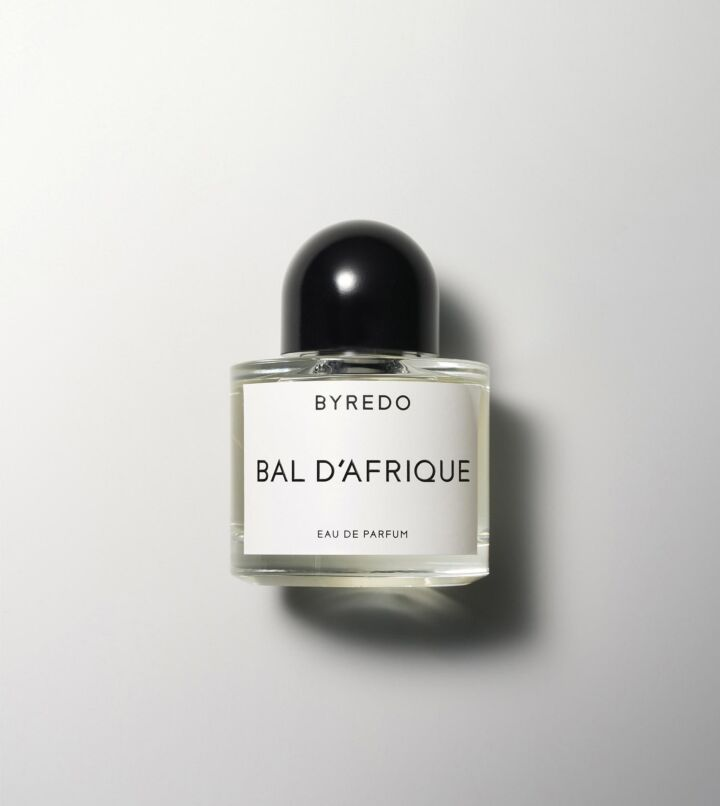

발 다프리크, 오 드 퍼퓸
“Bal d'Afrique는 제 초기 향수 중 하나입니다. 제제화 당시 나는 기억을 향기로 바꾸는 것에 집착했다. 동시에 나는 상상의 요소를 포함할 만큼 충분히 자신감을 느꼈다. 아버지는 약 10-15년 동안 아프리카에서 살면서 여행을 다녔습니다. 나는 그의 일기를 읽을 것입니다. 화물선을 타고 여행하는 길, 다양한 사람들을 만났던… 나에게 이것은 누군가의 말로 아프리카에 도착하는 환상이었다. Bal d'Afrique는 그것을 반영합니다. 그것은 상상의 여행이자 내가 아프리카 문화와 그 영향을 보는 방식에 대한 완전한 축하입니다.”
아름다움과 환상에 초점을 맞춘 BAL D'AFRIQUE는 Ben Gorham이 아프리카에 보내는 '러브레터'입니다. 시간이 지남에 따라 아프리카의 영향력과 영향력, 특히 수많은 문화가 춤, 예술 및 음악을 형성한 방식, 즉 상상의 사건에 대한 아이디어를 요약하고 축하하기를 원합니다.